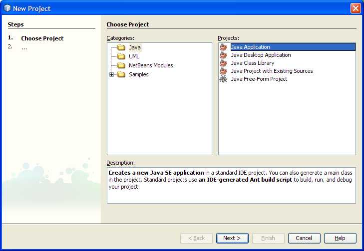
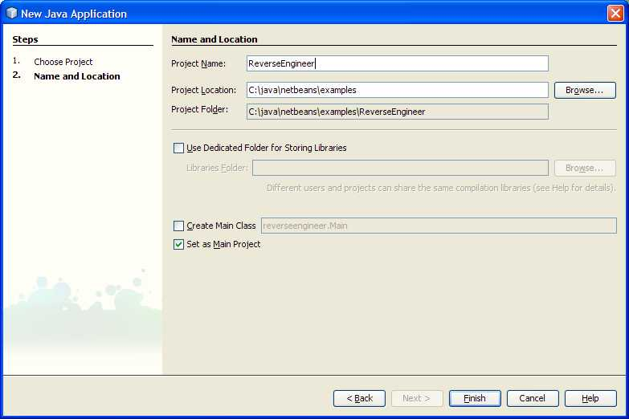
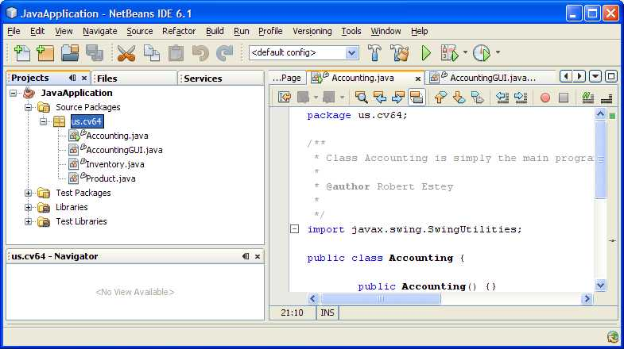
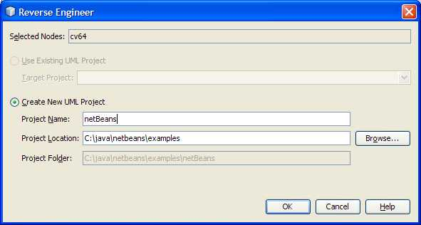
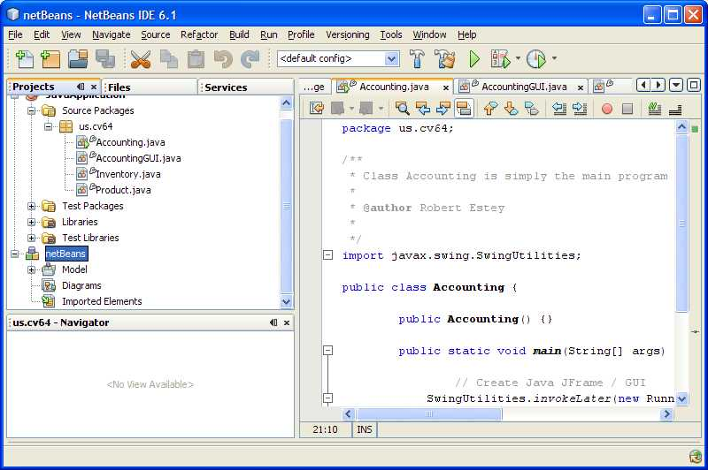
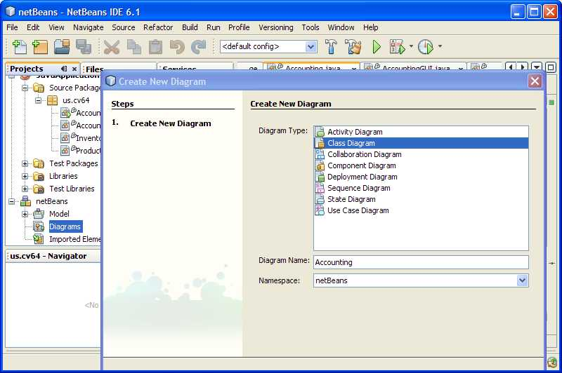
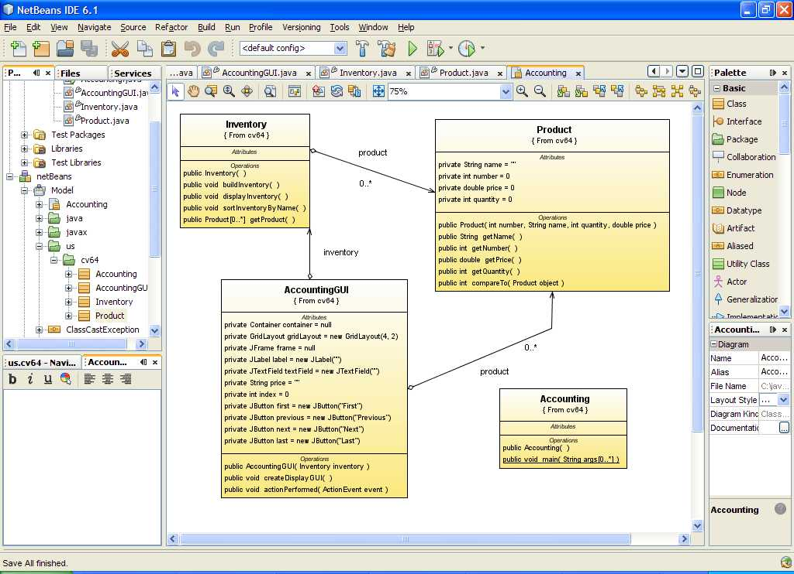

NetBeans Reverse
Engineer Example
Note: If there are questions about executing the NetBeans product
that are not covered here, please look at the NetBeans Users Guide.
Create a Java Project, Click File / New Project / Java Application.

Press Next> and fill out the empty
fields similar to the following:

Download the enclosed code and put in your
NetBeans project.

Right click the package us.cv64 and
select Reverse Engineer.

Select the location of the project
and press OK. This will create a UML model.

The code will be generated in the
Model folder. Create a diagram, e.g. Class Diagram by
following the instructions.

Click open Model and select the
Classes you wish to put on the class diagram, drag the classes,
e.g. all the us.cv64 Classes into the Class diagram.

WHOLLA :-) You just REVERSE ENGINEERED, Java Code into a UML
diagram. If you have the diagrams, you can FORWARD ENGINEER from
UML to Java Code.